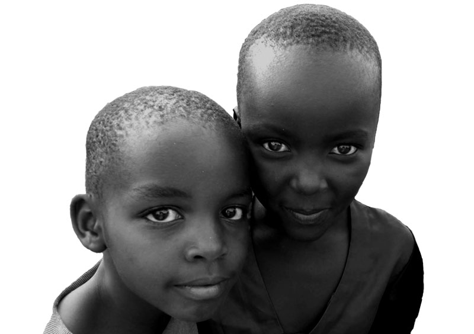

About Christadelphian Meal a Day Charity
We work all around the world on a range of projects and try to give everyone we meet a meal a day.

In a world where 22,000 people die each day due to poverty, 50% of the world population live of less than $2.50 a day and over 40% of people live without access to toilets, it’s easy to see there’s a need. The numbers are staggering, and it’s often difficult to comprehend just how big the need is.
Even if you can begin to understand those numbers, they’re overwhelming.
But what’s more powerful is when you actually begin to get under the skin of those numbers. Behind all the statistics and figures are people. Brothers, friends, neighbours, mothers. Each of them have their own needs, and they are the people we want to help.
- 2,700 Children supported
- 875,000+ Meals a year
- 44 Projects
- 50 Locations worldwide
Our Mission
CMaD’s mission is, as a practical witness to our faith, to share the blessings we receive from God to help those who are in real need in the less developed parts of the world. We support sustainable ‘down to earth’ projects that focus on supporting vulnerable children, the provision of clean water, agricultural skills, basic health care and education and a meal a day. Our hope is that by touching the lives of our ‘neighbours’ in need we might by our actions help to also teach them something of the love of Jesus and the hope of everlasting life to be found by faith in him. The charity is run from within the Christadelphian community and each of its trustees and officers give their time and expertise free to CMaD. They often pay most or all of their own costs for overseas visits to projects. This ensures that the charity has the very minimum administrative costs and overheads. As a result CMaD is typically able to deliver 97% of its income direct to our projects.
Our Projects
One of the biggest differences that this project has made is that it has given me and my family options…Now that we have improved our lives, the children can spend more time at school and can study in the evenings. My dream for them is that they will have the opportunities that I didn’t.
Tadesse Gentaneh, Wof Washa Forest Project, Ethiopia
My future was dark, but now my future Is bright and my heart is full of joy! Meal a Day has helped give my life hope and joy!
Eunice, Timboni Tiva Children’s Home, Kenya
I am thankful for Meal a Day and all the donors. Without them I would not be here, I would not get the services I need. Before, I was not able to do anything, and I was full of depression. But now I have the support I need to get better. Thank you
Flora Matias, Tanzania
News and Stories
We have over 40 projects across 14 countries in Africa and Europe. Below are a selection on these projects.
Find out more about some of our other projects here
Get Involved
Help us try and help others Keep up to date with our latest projects
https://vimeo.com/user3582072/review/399464212/d65e13a556
About CMaD
Meal a Day UK works in partnership with Meal a Day Asia Pacific, and Meal a Day Americas to carry out Meal a Day’s work worldwide. You can find out more information at:
- www.meal-a-day.asia
- www.cmadfa.com
What we do
- Who we are
- Where we work
- Governance
- The Committee
- Merchandise
Get involved
- May we eat
- E newsletter
- Fundraising
- Sponsor a project
- Contact us
- Follow us on Facebook
Our projects
- Timboni Tiva Children’s Home, Kenya
- Nalondo School, Kenya
- Mbengwi Children’s Home, Cameroon
- FlySpec, Zambia
- Lela Home, Kenya
Test Area
- Joe can edit this
- Sarah can also edit this
- Richard can edit this
Registered Charity Number: 1133337